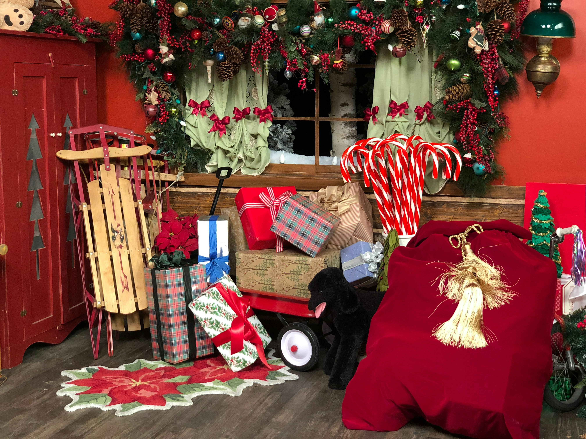
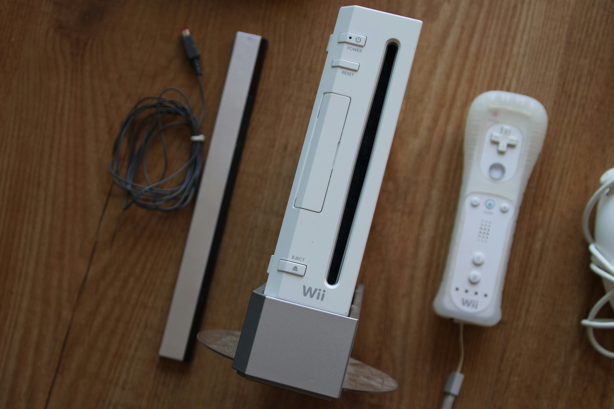

One of my favorite parts of the Christmas season is shopping for gifts for my friends and family. I love the hunt of trying to find the perfect gift for my loved ones. I also enjoy the wrapping process. The best part is getting to see my loved one's reaction to the gifts when they open them, and getting to see what others got for everyone else.
Every year, after dinner, my family likes to play Wii Sports, Wii Sports Resort, and Jackbox games. Bowling is our favorite Wii Sports game to play. We typically play at least 5 rounds of bowling. Our favorite Jackbox games are Fibbage and Guesspionage. Personally, my favorite Jackbox game is Tee K.O., but the rest of my family doesn't like it because it involves drawing and I'm the only person in my family who likes to make art. Some years we even play Wii Fit to weight our pets.
Since as long as I can remember my mom has gotten both my brother and I advent calendars for us to open up leading up to Christmas. Some years she would buy us ones with toys. My brother and I would always hope for a Lego advent calendar every year. In more recent years my mom has been filling the reusable advent calendar we have with money. It has intermittent green and blue doors; I get to open the green doors and my brother opens the red doors. My favorite part of out reusable advent calendar is that in the middle it hold an old photo from when my brother and I were young with our old dogs Chase and Molly.